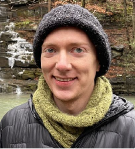

Seminars
Welcome to Sydney System Research Seminar Series. We will feature some of the most interesting system research progress in academia and industry. Recent focus will be Machine Learning Systems. Please subscribe to our mailing list. 2022 speakers lineup will be announced soon!
-
(Un)rigging the Hardware Lottery for an AI future
Sara Hooker and Anna Goldie
Google Brain and Stanford University
Abstract:
We will discuss both open problems and opportunities in hardware design. Sara Hooker will present her work on the Hardware Lottery.
How do the tools we use shape the course of computer science history? The hardware lottery describes when a research idea wins because it is suited to the available software and hardware and not because the idea is superior to alternative research directions. Anna Goldie will then describe AI / ML methods that move us closer to overcoming these limitations, presenting a deep reinforcement learning method capable of superhuman chip floorplanning, the engineering task of designing the physical layout of a computer chip. By accelerating one of the long poles in the chip design process, Anna hopes to move us closer to a world in which hardware can be quickly and cheaply tailored to algorithms. In addition to the technical content, there is another focus of this talk: the speakers will also talk about their own research path and some personal stories to inspire our students, especially our female and minority students who may be confused about career options after graduation, to motivate those students who want to pursue research careers.
Brief Bio:
Sara Hooker is a researcher at Google Brain doing deep learning research on training models beyond test-set accuracy to fulfill multiple desiderata. Her main research interests gravitate to deep neural network interpretability, model compression and security.
Anna Goldie is a Staff Research Scientist at Google Brain and co-founder/lead of the Machine Learning for Systems Team. She is also a PhD student in the Stanford NLP Group, and earned her Masters / Bachelors of Computer Science and Bachelors of Linguistics from MIT. To find out more about the speakers, please visit:
If you are interested please visit Sara Hooker's Website and Anna Goldie's Website. -
Explorations from pure math to AI hardware Silicon Valley startups
Laura Florescu
AI researcher, MosaicML

Abstract:
In this talk, Laura will first detail her journey from a pure mathematics bachelor's to joining the founding team of an early stage AI Silicon Valley startup focusing on making ML training more efficient. Having explored both academia and academic labs, as well as tech startups, she will expand on the variety of careers and opportunities that a technical degree can offer. Next, she will describe technical challenges and opportunities in AI, both from the hardware as well as the software perspective.
Brief Bio:
Laura Florescu is currently an early AI researcher at MosaicML, an early stage startup focusing on making AI training more efficient. Before that she spent a few years at a couple well-funded AI hardware startups. She was an early employee at Groq, founded by Google TPU engineers, and a Principal Engineer at Sambanova Systems, working on training ML models on novel architectures. Previously, she got a PhD in Math/CS at New York University.
-
Distributed Graph Mining on Evolving Graphs
Dr. Laurent Bindschaedler
MIT CSAIL

Abstract:
Extracting insight from highly dynamic, graph-structured data by discovering interesting patterns embedded within these graphs has many real-world applications in chemistry, networking, finance, semantic web, and social networks. This problem is challenging because most existing graph pattern mining systems only support static graphs. Moreover, the obvious solution of computing patterns from scratch after each change to the graph is prohibitively expensive. This talk introduces an update-driven approach to building distributed streaming systems for graph pattern mining on evolving graphs. First, I will demonstrate the need for a new approach to supporting evolving graphs that differs from existing static mining systems. I will present a novel graph exploration algorithm that supports differential mining to efficiently find the changes corresponding to graph updates. I will then propose several optimisations to filter out duplicate subgraphs found during exploration in a co-ordination-free manner, making it possible to parallelise and distribute exploration tasks efficiently while maintaining correctness. I will also demonstrate how to support this design with a multi-versioned disaggregated graph store that enables near-linear scalability across parallel workers. Finally, I will present Tesseract, a system implementing these techniques that achieves order-of-magnitude performance improvements over the state-of-the-art.
Brief Bio:
Laurent Bindschaedler is a Postdoctoral Fellow at MIT CSAIL, working in the Data Systems Group with Prof. Tim Kraska. He completed his Ph.D. in Computer Science at EPFL in 2020 under the supervision of Prof. Willy Zwaenepoel. Laurent is particularly interested in designing and implementing large-scale, high-performance, resource-efficient computer systems for big data analytics and machine learning. His current research also explores the feasibility of leveraging machine learning techniques to specialise systems and components. During his Ph.D., he built the Chaos graph processing system, which currently holds a record for the largest graph processed by computer. Before starting his Ph.D., Laurent co-founded LakeMind, a cloud service troubleshooting company, in 2012. He earned a B.Sc. and an M.Sc. from EPFL in 2010 and 2012, respectively.
-
Languages & Compilers for Hardware Acceleration
Assistant Professor Adrian Sampson
Computer Science, Cornell University

Abstract:
We need to make it easier to design custom accelerators, especially for reconfigurable hardware (i.e., FPGAs). The current mainstream options are hardware description languages (HDLs), which are low-level languages that make it feel like you’re wiring up a circuit by hand, and high-level synthesis (HLS) tools, which compile legacy software languages like C or C++ to an HDL. We find empirically (and unsurprisingly) that the semantic chasm between C++ and hardware circuits comes with myriad correctness and performance pitfalls. A better alternative is possible if we re-imagine the system stack for hardware accelerator design. Our lab at Cornell is building a set of languages and tools around a central theme of *predictability:* the idea that the cost model should be “obvious” in the source language. When optimality and predictability conflict, we pick the latter. This talk will focus on three pieces of this effort: Dahlia, an alternative to C-based HLS with a type system that enforces predictability; Calyx, a mid-level intermediate language for building DSL-to-RTL compilers; and Reticle, a low-level program representation for compiling to modern FPGAs and their hardened logic blocks.
Brief Bio:
Bio: Adrian Sampson is an assistant professor in the computer science department at Cornell. He works on programming languages, computer architecture, and the abstractions that separate them. He previously worked on approximate computing, the idea that we should allow machines to expose errors to some kinds of applications as a trade-off for computational efficiency. He sees approximate computing as an instance of a broader breakdown of airtight distinctions between hardware and software concerns.
-
Explorations from pure math to AI hardware Silicon Valley startups
Dr. Justin Gottschlich
Principal AI Scientist & Director/Founder of Machine Programming Research (Intel Labs)
Abstract:
In this talk, we discuss machine programming (MP), which is principally aimed at the automation of software development. We discuss how our research team, Machine Programming Research @ Intel Labs, is working toward new ways to automatically develop software based on two key tenets. Those tenets are: (i) improving software developer productivity and (ii) improving software quality (e.g., correctness, performance, maintainability, etc.). We discuss MP across three pillars: intention, invention, and adaptation. We also discuss the criticality of data for MP systems, which we believe is foundational to all MP systems. We close with some recent MP systems that we have built that have demonstrated state-of-the-art performance in code semantics similarity, debugging, and optimisation, including real-world results on production-grade deployed software systems.
Brief Bio:
Justin Gottschlich is a Principal AI Scientist and the Founder & Director of Machine Programming Research at Intel Labs. He also has an academic appointment as an Adjunct Assistant Professor at the University of Pennsylvania. Justin is the Principal Investigator (PI) of the upcoming Intel/NSF Machine Programming Research Center and was previously the co-founder and PI of the Intel/NSF CAPA Research Center. He co-founded the ACM Machine Programming Symposium (MAPS) and serves as its Steering Committee Chair. He is currently serving on two technical advisory boards: the 2020 NSF Expeditions “Understanding the World Through Code” led by MIT Prof. Armando Solar-Lezama and Inteon, a new machine programming (MP) venture wholly funded by Intel. Justin received his PhD in Computer Engineering from the University of Colorado-Boulder in 2011 and has 40+ peer- reviewed publications, 50+ issued patents, with 100+ patents pending. Justin and his team’s research have been highlighted in venues like Communications of the ACM, MIT Technology Review, The New York Times, and The Wall Street Journal.
If you are interested please visit Dr. Justin Gottschlisch's Website and YouTube Channel.